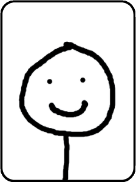
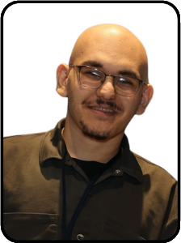
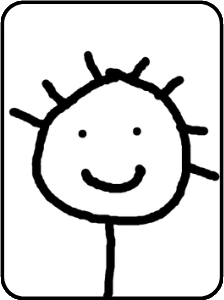
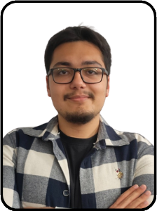
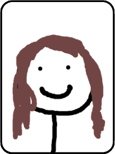
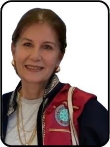

Project coordinator
Yusuf Terzi
ELT 3rd-year student
TÜBİTAK 2209-A Student Research Project
This platform was prepared within the scope of a TÜBİTAK 2209-A project accepted in the 2025 call. It was developed by Yusuf Terzi and Metin Torun under the academic guidance of Prof. Dr. Zübeyde Sinem Genç. The platform supports printable, AI-assisted board game creation for foreign language education.
Project team


Project coordinator
ELT 3rd-year student


Project partner
ELT 4th-year student


Under academic guidance of
Academic advisor